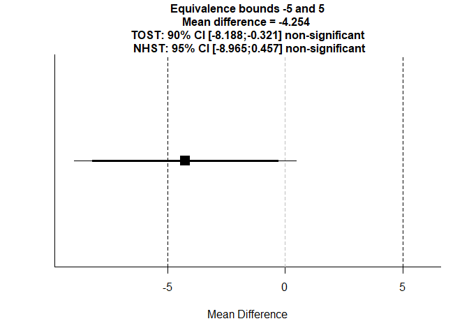

Chapter 2: Application of TOST in R
In this chapter, we demonstrate how to apply the TOST procedure using R. We will use the TOSTER package, which provides user-friendly functions for equivalence testing.
Example Scenario
Suppose we are comparing the mean response of two treatment groups in a biosimilar study. We aim to determine whether the observed difference in means is small enough to be considered clinically negligible, i.e., within a pre-specified equivalence margin.
Let’s assume:
- Group 1 (Test): Mean ≈ 100, SD ≈ 10
- Group 2 (Reference): Mean ≈ 102, SD ≈ 10
- Equivalence margin = ±5 units
Step 1: Simulated Data
set.seed(123)
group1 <- rnorm(30, mean = 100, sd = 10)
group2 <- rnorm(30, mean = 102, sd = 10)
summary(group1)## Min. 1st Qu. Median Mean 3rd Qu. Max.
## 80.33 93.29 99.26 99.53 104.89 117.87## Min. 1st Qu. Median Mean 3rd Qu. Max.
## 86.51 98.97 102.48 103.78 109.57 123.69Step 2: Traditional t-test (for comparison)
##
## Welch Two Sample t-test
##
## data: group1 and group2
## t = -1.8087, df = 56.559, p-value = 0.07581
## alternative hypothesis: true difference in means is not equal to 0
## 95 percent confidence interval:
## -8.9654261 0.4565843
## sample estimates:
## mean of x mean of y
## 99.52896 103.78338The p-value > 0.05 does not confirm equivalence, only that no significant difference was found.
Step 3: TOST Analysis with TOSTER
We now perform TOST with equivalence bounds of -5 and +5 units.
library(TOSTER)
TOST_result <- TOSTtwo.raw(m1 = mean(group1),
m2 = mean(group2),
sd1 = sd(group1),
sd2 = sd(group2),
n1 = length(group1),
n2 = length(group2),
low_eqbound = -5,
high_eqbound = 5,
alpha = 0.05)
## TOST results:
## t-value lower bound: 0.317 p-value lower bound: 0.376
## t-value upper bound: -3.93 p-value upper bound: 0.0001
## degrees of freedom : 56.56
##
## Equivalence bounds (raw scores):
## low eqbound: -5
## high eqbound: 5
##
## TOST confidence interval:
## lower bound 90% CI: -8.188
## upper bound 90% CI: -0.321
##
## NHST confidence interval:
## lower bound 95% CI: -8.965
## upper bound 95% CI: 0.457
##
## Equivalence Test Result:
## The equivalence test was non-significant, t(56.56) = 0.317, p = 0.376, given equivalence bounds of -5.000 and 5.000 (on a raw scale) and an alpha of 0.05.## ##
## Null Hypothesis Test Result:
## The null hypothesis test was non-significant, t(56.56) = -1.809, p = 0.0758, given an alpha of 0.05.## ## NHST: don't reject null significance hypothesis that the effect is equal to 0
## TOST: don't reject null equivalence hypothesis## $diff
## [1] -4.254421
##
## $TOST_t1
## [1] 0.3169703
##
## $TOST_p1
## [1] 0.3762166
##
## $TOST_t2
## [1] -3.934361
##
## $TOST_p2
## [1] 0.0001152633
##
## $TOST_df
## [1] 56.55858
##
## $alpha
## [1] 0.05
##
## $low_eqbound
## [1] -5
##
## $high_eqbound
## [1] 5
##
## $LL_CI_TOST
## [1] -8.187882
##
## $UL_CI_TOST
## [1] -0.3209598
##
## $LL_CI_TTEST
## [1] -8.965426
##
## $UL_CI_TTEST
## [1] 0.4565843
##
## $NHST_t
## [1] -1.808695
##
## $NHST_p
## [1] 0.075815Interpretation
- If both one-sided p-values < 0.05, equivalence is concluded.
- Check whether the 90% confidence interval lies entirely within [-5, +5]
Step 4: Visualizing Equivalence
library(ggplot2)
diff <- mean(group1) - mean(group2)
se <- sqrt(sd(group1)^2/length(group1) + sd(group2)^2/length(group2))
ci <- c(diff - qt(0.95, df=length(group1)+length(group2)-2)*se,
diff + qt(0.95, df=length(group1)+length(group2)-2)*se)
df_ci <- data.frame(lower = ci[1], upper = ci[2], mean_diff = diff)
ggplot(df_ci) +
geom_errorbarh(aes(y = 1, xmin = lower, xmax = upper),
height = 0.1, #
linewidth = 0.2) +
geom_point(aes(y = 1, x = mean_diff), size = 3, color = "blue") +
geom_vline(xintercept = c(-5, 5), linetype = "dashed", color = "red", linewidth = 0.5) +
xlim(-10, 10) +
ylim(0.5, 1.5) +
labs(title = "Equivalence Testing: Confidence Interval vs Margin",
x = "Difference in Means", y = "") +
theme_minimal() +
theme(axis.text.y = element_blank(),
axis.ticks.y = element_blank())
The confidence interval does not lie within the red dashed lines (equivalence margin) and therefore equivalence is not supported.
Manual TOST in R
For education purpose, we replicate the TOST calculation manually, using the same data.
Step 1: Mean difference and standard error
mean_diff <- mean(group1) - mean(group2)
sd1 <- sd(group1)
sd2 <- sd(group2)
n1 <- length(group1)
n2 <- length(group2)
se_diff <- sqrt(sd1^2/n1 + sd2^2/n2)Step 2: Degrees of freedom and critical t-value
# Welch-Satterthwaite approximation
df <- (sd1^2/n1 + sd2^2/n2)^2 /
((sd1^4)/((n1-1)*n1^2) + (sd2^4)/((n2-1)*n2^2))
t_crit <- qt(0.95, df) # For 90% CI Step 3: Confidence interval of the difference
lci <- mean_diff - t_crit * se_diff
uci <- mean_diff + t_crit * se_diff
cat("90% CI: [", round(lci, 2), ",", round(uci, 2), "]\n")## 90% CI: [ -8.19 , -0.32 ]Step 4: Compare CI to Equivalence Margins
margin <- 5
if (lci > -margin & uci < margin) {
cat("Conclusion: Equivalence supported.\n")
} else {
cat("Conclusion: Equivalence NOT supported.\n")
}## Conclusion: Equivalence NOT supported.This manual approach yields the same conclusion as the TOSTER package.